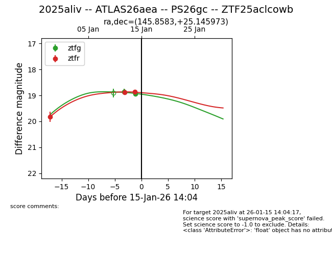
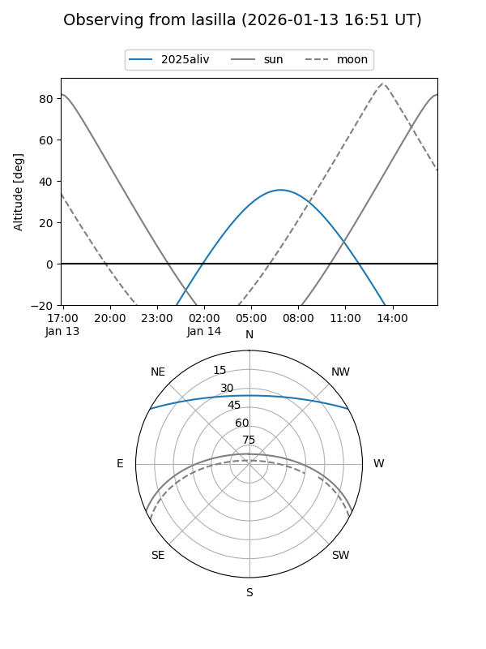
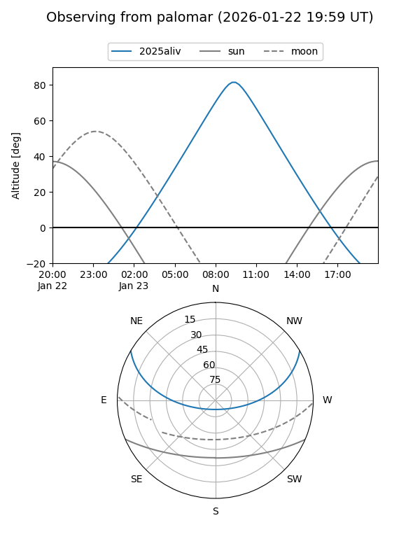
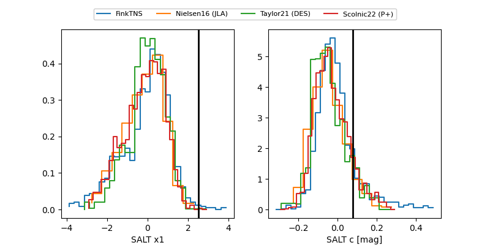

2025aliv
Target 2025aliv at 2026-01-25 06:36
Aliases and brokers:
FINK: link
Lasair: link
ALeRCE: link
TNS: link
YSE: link
alt names
ZTF25aclcowb (ztf,fink_ztf)
2025aliv (tns,yse)
ATLAS26aea (atlas)
PS26gc (panstarrs)
Coordinates:
equatorial (ra, dec) = 145.8583,+25.14597
equatorial (HMS+DMS) = 09:43:25.99,+25:08:45.50
galactic (l, b) = (204.6240,+48.00420)
Flags:
Photometry:
last ztfg=19.17, ztfr=19.02
5 ztfg, 6 ztfr detections
Lightcurve

Visibility


Additional plots
